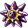
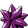

#198
Starmie
Enhanced typingWaterPsychic
Natural CureSwitch-outs heal status problems.
AnalyticBoosts move power when moving last.
RegeneratorHidden abilityRestores HP when withdrawn.
Original vs Enhanced
Original uses modern main-game values. Enhanced uses Crimson Crystal’s changes. Choose typings and base stats separately when starting a new game. Abilities, moves and evolution changes apply to both choices.
Original
WaterPsychic
Enhanced
WaterPsychic
Base stats
| Stat | Original | Enhanced | Change |
|---|---|---|---|
| HP | 60 | 60 | — |
| Attack | 75 | 75 | — |
| Defense | 85 | 85 | — |
| Sp. Atk | 100 | 100 | — |
| Sp. Def | 85 | 85 | — |
| Speed | 115 | 115 | — |
| Total | 520 | 520 | — |
Evolution
Evolves from Staryu — Use a Water Stone
Training & breeding
- Catch rate
- 60 / 255
- Base experience
- 182
- Wild held items
- Stardust (common), Star Piece (rare)
- Gender ratio
- Genderless
- Egg groups
- Water 3
- Hatch time
- 20 egg cycles (~5,120 steps)
- Growth rate
- Slow
Level-up moves
LevelMoveTypeCat.PowerAcc.
TM / HM moves 23
TM / HMMoveTypeCat.PowerAcc.